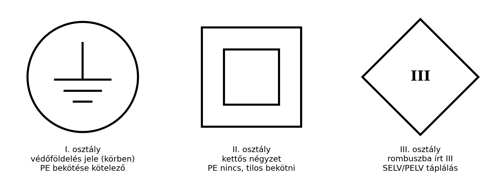

Tegyük fel, hogy egy medence melletti LED-világítást kell bekötnöd, vagy egy építkezésen használt kézi lámpát kell megjavítanod. Itt nem elég a megszokott 230 V-os áramkör: olyan védelmet kell választanod, amely akkor is biztonságos, ha a dolgozó vizes kézzel, szűk helyen, vagy fém állványon dolgozik. Ebben az alfejezetben azokat a védelmi módokat tanuljuk meg, amelyeknél a biztonságot nem elsősorban a gyors lekapcsolás, hanem a feszültség eleve alacsonyan tartása, a kettős szigetelés, vagy a hálózatból való galvanikus elválasztás adja.
Képzelj el egy medence melletti 12 V-os LED-lámpát, amelyet biztonsági transzformátorról (SELV) táplálunk. A transzformátor primer oldala 230 V-ra csatlakozik, a szekunder oldala viszont csak 12 V vagy 24 V feszültséget ad, és galvanikusan el van választva a hálózattól. Ha a dolgozó megfogja a 12 V-os kimenet egyik pólusát, nem tud rajta veszélyes áram keresztülfolyni, és a hálózati fázishoz képest sem alakul ki veszélyes hurok.
A rajz azt mutatja, hogy a primer oldalon két vezető (L és N) táplálja a transzformátort, a szekunder oldalon két vezető a lámpát, és a két oldal között csak a transzformátor mágneses csatolása van, közvetlen villamos (galvanikus) kapcsolat nincs. A PE csak a primer oldalon, a transzformátor fémházáig megy. A szekunder oldalon szándékosan nincs földelés, ezért ez SELV rendszer.
Definíció. Törpefeszültség (ELV): Olyan legfeljebb 50 V váltakozó feszültség vagy legfeljebb 120 V simított egyenfeszültség, amelynél az áramütés veszélye már jelentősen csökken. A pontos határ az aktuális szabvány szerint ellenőrizendő, mert a gyakorlatban a nedves, vezetőképes környezetben ennél alacsonyabb értékeket is előírhatnak. A törpefeszültség önmagában még nem biztos, hogy „veszélytelen”, ezért megkülönböztetjük a SELV, PELV és FELV rendszereket.
Definíció. SELV (biztonsági törpefeszültség): Olyan törpefeszültségű villamos rendszer, amely galvanikusan el van választva a hálózattól, és nincs földelve, ezért egyetlen földzárlat sem hozhat létre veszélyes érintési feszültséget. Táplálása általában biztonsági transzformátorról, akkumulátorról vagy más, a hálózattól elválasztott forrásról történik. Ez a legmagasabb biztonsági szintet nyújtó törpefeszültségű rendszer.
Definíció. PELV (védőtörpefeszültség): Olyan törpefeszültségű rendszer, amely galvanikusan el van választva a hálózattól, de valamelyik pontja földelve van. A földelés lehet üzemi vagy védelmi céllal. A PELV-et akkor használják, ha a rendszernek valamilyen okból földhöz viszonyított, jól meghatározott potenciáljának kell lennie. A SELV-hez képest itt a földelés miatt nagyobb körültekintés szükséges.
Definíció. FELV (funkcionális törpefeszültség): Olyan törpefeszültségű rendszer, amelyet nem biztonsági célból használnak, hanem azért, mert a fogyasztó működéséhez ez a feszültség szükséges (például egyes jelfogó-áramkörök, érzékelők). A FELV nem nyújt ugyanolyan érintésvédelmet, mint a SELV vagy a PELV, ezért a FELV-kört úgy kell kezelni, mintha a primer (hálózati) kör része volna: az alapvédelmet a primer feszültségre méretezett szigetelés vagy burkolat adja, a hibavédelmet a FELV-kör testeinek a primer kör védővezetőjére kötése (önműködő lekapcsolással) (ellenőrizendő: MSZ HD 60364-4-41, FELV).
Definíció. II. érintésvédelmi osztály (kettős szigetelés): Olyan villamos berendezés, amelynél a védelmet nem a védővezető, hanem a megerősített vagy kettős (alap + kiegészítő) szigetelés biztosítja. A II. osztályú készüléken nincs védővezető-csatlakozás (PE), és a készülékház többnyire szigetelőanyagból van, de fémház is lehet (ilyenkor a fém burkolat a feszültség alatti résztől kettős vagy megerősített szigeteléssel elválasztott). A kettős szigetelés jelképe a kettős négyzet (két egymásba rajzolt négyzet).
A II. érintésvédelmi osztályú készüléket a rajzon és a típustáblán a kettős négyzet jelöli; az ábra mindhárom osztály jelképét mutatja:

Az I. osztály jele a körbe zárt védőföldelés-jel (függőleges vonal, alatta három, lefelé rövidülő vízszintes vonal), a II. osztályé két egymásba rajzolt négyzet, a III. osztályé rombuszba írt római III (ellenőrizendő: MSZ EN 60417 jelképszámai: 5019, 5172, 5180).
Fontos. A II. osztályú készülékekre tilos védővezetőt csatlakoztatni, mert ezzel a kettős szigetelésű készülék vezetőképes házát feleslegesen a hálózat védőföldeléséhez kötjük, ami miatt a PE-n más hibából (például egy másik készülék testzárlata vagy PEN-szakadás miatt) megjelenő feszültség közvetlenül a II. osztályú készülék érinthető részeire juthat, megkerülve a kettős szigetelést.
Ne keverd: a biztonsági transzformátor törpefeszültséget ad (SELV), a leválasztó transzformátor hálózati nagyságú feszültséget, egyetlen fogyasztónak (védőelválasztás); a fürdőszobai borotvaaljzat leválasztó transzformátora például 230 V-os szekunderrel védőelválasztást valósít meg (ellenőrizendő: MSZ EN 61558-2-5).
A védőelválasztás olyan védelmi intézkedés, amikor a fogyasztót egy védőelválasztó transzformátorról (választótranszformátorról) tápláljuk. Ennek a transzformátornak a primer és szekunder tekercse között megerősített vagy kettős szigetelés van, így a szekunder oldal a hálózattól galvanikusan el van választva. A gyakorlatban egyetlen fogyasztót szabad így táplálni, hogy a szekunder oldalon ne alakulhasson ki földzárlatos hurok. Több fogyasztó esetén külön engedélyek és kiegészítő feltételek érvényesek (ellenőrizendő: a vonatkozó szabvány és az aktuális előírások).
A nem vezető helyiség olyan védelmi mód, ahol a padló és a falak legalább bizonyos területen nem vezető anyagúak (például száraz fa, műanyag burkolat), és nincs benne olyan fémes, földelt fémrész, amelyet a dolgozó egyszerre érinthetne a hibás berendezéssel. Így ha egy berendezésben hiba keletkezik, a testen megjelenő feszültség nem tud veszélyes áramot hajtani az emberen keresztül a föld felé. Ezt a módot csak olyan helyiségben szabad alkalmazni, ahol a berendezések használatát és a helyiség rendeltetését pontosan rögzítik, és a helyiségből idegen, vezetőképes fémrészek nem állnak ki.
Az egyenpotenciálú környezet (földeletlen egyenpotenciálú környezet) azt jelenti, hogy a helyiségben minden idegen vezetőképes rész (fém cső, fém ajtókeret) oly módon van összekötve, hogy egy hiba esetén az érinthető fémrészek között ne jöhessen létre veszélyes feszültségkülönbség, miközben maga a rendszer nincs földelve.
A készülékeket három érintésvédelmi osztályba soroljuk:
I. osztály (földeléses készülék): Alap szigetelésű, az érinthető fémház védővezetőre csatlakozik. Ha a fázisvezető hozzáér a fémházhoz, a védővezetőn át zárlati áram folyik, és a túláramvédelem lekapcsol. Jelölés: a védőföldelő kapocs mellett a körbe zárt földelésjel (függőleges vonal, alatta három, lefelé rövidülő vízszintes vonal).
II. osztály (kettős szigetelésű készülék): Nincs védővezető. A fémház vagy vezetőképes burkolat és a feszültség alatti rész közé kettős vagy megerősített szigetelés van beépítve. Jelölés: kettős négyzet. A burkolat általában műanyag.
III. osztály (törpefeszültségű készülék): A készüléket SELV vagy PELV forrásról táplálják. A készülékben a törpefeszültségű áramkörök és a hálózati feszültségű áramkörök között megerősített szigetelés van. Jelölés: rombuszba írt római III (ellenőrizendő: MSZ EN 60417).
Megjegyzés. Létezik 0. osztály (nulla osztály) is a régi gyakorlatban, ahol csak alap szigetelés van, és nincs védővezető vagy kettős szigetelés. A mai magyar és európai szerelési gyakorlatban a 0. osztályú készülékeket tilos új berendezésként használni; legfeljebb régi, felülvizsgálat alatt álló létesítményekben fordulnak elő, és akkor is ki kell váltani vagy át kell alakítani.
Szabvány. A törpefeszültségű rendszerek, a védőelválasztás, a nem vezető helyiség és az érintésvédelmi osztályok követelményeit a MSZ HD 60364 sorozat, elsősorban a MSZ HD 60364-4-41 (Áramütés elleni védelem: SELV/PELV, védőelválasztás, kettős szigetelés, nem vezető helyiség) tartalmazza; a biztonsági és leválasztó transzformátorokra az MSZ EN 61558 sorozat, az érintésvédelmi osztályokra az MSZ EN 61140 vonatkozik. A készülékek jelölésére az MSZ EN 60417 jelkép-szabvány vonatkozó részei és a MSZ EN 60598 (lámpatestek), illetve a MSZ EN 60335 (háztartási készülékek) vonatkoznak. A gyakorló villanyszerelőnek mindig az aktuális kiadású szabványt kell követnie, és a kiválasztás előtt ellenőriznie kell a gyártói adatlapot is (ellenőrizendő: aktuális szabványkiadás és a vonatkozó előírások).
A szabályok indoklása egyszerű: minél kisebb a feszültség, annál kisebb az emberen átfolyó áram; minél jobb a szigetelés, annál kisebb a szigetelési hiba esélye; minél kevesebb földhöz képest vezető hurok van, annál kisebb a hibafeszültség.
Adott: Egy gépvezérlés kapcsolószekrényében a vezérlő elektronika 24 V DC tápellátást igényel. A szekunder áramkör 0 V pontjának földelését a gyártó előírja.
Keresett: Melyik védelmi módot használjuk?
Megoldás: Mivel a rendszer törpefeszültségű és földelve van, ez PELV rendszer. A földelés miatt a szekunder oldalon nem alakulhat ki lebegő potenciál, de ez nem jelenti, hogy a törpefeszültség önmagában mindent megold: PELV-nél 25 V AC / 60 V DC felett szigeteléssel vagy burkolattal az alapvédelemről is gondoskodni kell (ellenőrizendő: MSZ HD 60364-4-41). Medencék, szaunák, fürdőszobák zónáiban külön szabványrész (MSZ HD 60364-7-xxx) határozza meg a megengedett védelmi módot és feszültséget; az úszómedence 0. és 1. zónájában SELV használható, legfeljebb 12 V AC / 30 V DC feszültséggel, PELV nem (ellenőrizendő: MSZ HD 60364-7-702).
Adott: Egy 24 V-os, 20 VA névleges teljesítményű LED-es tükörvilágítást egy 230/24 V-os, 50 Hz-es biztonsági (SELV) transzformátor táplál.
Keresett: Mekkora a szekunder névleges áram, és mekkora a primer névleges áram (ideális esetben)?
Megoldás:
A szekunder áram:
Az ideális transzformátor teljesítmény-megőrzése miatt a primer oldali látszólagos teljesítmény megegyezik a szekunder oldalival:
A primer áram:
Ellenőrzés: A primer áramnak sokkal kisebbnek kell lennie, mint a szekunder áram, mert a primer feszültség sokkal nagyobb. Az eredmények aránya: , ami megfelel a feszültségáttételnek (). ∎
Eset: Egy építkezésen a dolgozók egy fém állványon dolgoznak, és 230 V-os kézi lámpát használnak. A lámpa fémházán szigetelési hiba keletkezik, a fázisvezető hozzáér a fémházhoz. Ha a lámpa nincs védőföldelve (vagy a PE-vezető el van szakadva), a dolgozó, aki a fém állványt is fogja, áramütést szenved. A helyes megoldás az lenne, ha a munkaterületen 24 V-os, SELV táplálású kézi lámpát használnának, amelyet egy biztonsági transzformátor táplál. Ekkor a lámpa házán legfeljebb 24 V feszültség jelenhet meg, és a fém állványhoz képest nem alakul ki veszélyes hurok.
Tanulság: Nedves, szűk, jól vezető környezetben a törpefeszültségű, SELV vagy PELV rendszerű eszközök a legbiztonságosabbak. A 230 V-os kézi eszközök használatához ilyen helyeken jogszabályi és szabványi korlátozások tartoznak.
SELV áramkör földelése. Ha egy SELV áramkört véletlenül földelnek, az már nem SELV, mert a földelés miatt a szekunder oldal potenciálja a földhöz képest rögzített. Ez önmagában nem feltétlenül hibás, de ilyenkor a rendszert PELV-ként kell azonosítani és feliratozni, és a gyártói előírásokat be kell tartani. A hiba az, ha valaki ezt nem tudja, és SELV-ként kezeli tovább.
FELV használata SELV helyett. A FELV áramkör törpefeszültségű, de nem olyan mértékben védett, mint a SELV. Ha valaki egy FELV tápegységről táplál egy kézi lámpát, és a lámpa fémházas, a fémházon még megjelenhet a hálózattól származó potenciál, vagy a szigetelés meghibásodása esetén a hálózat feszültsége átjuthat a törpefeszültségű oldalra, ha a tápegység nem biztonsági leválasztású.
Védővezető csatlakoztatása II. osztályú készülékre. A kettős szigetelésű készülékre tilos PE-vezetőt kötni. Ha valaki mégis ráfog egy védővezetőt, a készülék elveszíti a II. osztályú jelleget, és a PE-n más készülék testzárlata vagy PEN-szakadás miatt megjelenő hibafeszültség a II. osztályú készülék érinthető vezető részeire juthat, amit a kettős szigetelés nem tart vissza.
Választótranszformátorról több fogyasztó ellátása. Ha egyetlen védőelválasztó transzformátorról több, különböző helyen lévő fogyasztót táplálunk, és a szekunder oldalon nincs földelés, egyetlen fogyasztónál bekövetkező földzárlat a többi fogyasztó testzárlatát is veszélyessé teheti. A szabvány ezért általában csak egyetlen fogyasztót enged meg; több fogyasztó esetén kiegészítő intézkedéseket ír elő (ellenőrizendő: aktuális szabvány).
1. A SELV-ben a törpefeszültségű áramkör nem földelt, a PELV-ben pedig földelve van.
2. A törpefeszültség határa váltakozó áram esetén 50 V. Nedves, vezetőképes környezetben (fürdőszoba, medence) ennél alacsonyabb, például 12 V vagy 25 V is előírható, mert a víz és a nagyobb testáram miatt a veszélyes élettani hatás már kisebb feszültségnél jelentkezhet.
3. Kettős négyzet (két koncentrikus vagy egymásba rajzolt négyzet).
4. III. osztály, mert törpefeszültségű (SELV vagy PELV) forrásról táplálják, és a tápegység a hálózattól galvanikusan el van választva.
5. A II. osztályú készülék védelme a kettős szigetelés. Ha mégis PE-t kötünk a vezetőképes részeire, a PE-n más készülék testzárlata vagy PEN-szakadás miatt megjelenő feszültség közvetlenül a II. osztályú készülék érinthető részeire jut, megkerülve a kettős szigetelést.
6. A FELV törpefeszültségű, de nem kell hálózati leválasztást biztosítania, így a törpefeszültségű oldal akár a hálózatból származó potenciált is felvehet, vagy a szekunder áramkörben fellépő hiba a tápforrás szigetelésének hiánya miatt veszélyes hibafeszültséget hozhat létre. A SELV esetében a szekunder oldal a hálózattól teljesen el van választva és nincs földelve, így egyetlen földzárlat sem hoz létre veszélyes érintési feszültséget.
1. feladat (A). Nevezz meg legalább három olyan védelmi módot, amely nem a gyors lekapcsoláson alapul, és írd le röviden, mi a lényege mindegyiknek!
2. feladat (A). Egy háztartási kézi fúrógép típustábláján kettős négyzet jel látható. Milyen érintésvédelmi osztályba tartozik? Hány eres kábellel kell csatlakoztatni (fázis, nulla, PE)?
3. feladat (B). Egy 230/12 V-os, 50 VA névleges teljesítményű biztonsági transzformátor szekunder oldalára egy 12 V-os, 20 W-os halogénlámpát kapcsolunk. Mekkora a szekunder áram? Mekkora a primer oldali áram (ideális esetben). Ellenőrizd a nagyságrendet!
4. feladat (B). Rajzold le (vagy írd le szövegesen) egy SELV áramkör egyszerű kapcsolási rajzát: hálózati csatlakozás (L1, N, PE), biztonsági leválasztó kapcsoló, transzformátor, 24 V-os LED-szalag. Jelöld, hogy a PE-vezető hol szakad meg (nem megy át a szekunder oldalra)!
5. feladat (C). Egy nedves pincében egy 230 V-os, I. osztályú szivattyút kell cserélni. A szivattyú fémházas. Miért nem elég a gyors lekapcsolás (FI-relé) önmagában? Milyen alternatív védelmi megoldást javasolnál a veszély csökkentésére?
6. feladat (D). Egy 20 VA-es, 230/12 V-os biztonsági transzformátor szekunder kapcsaira egy 60 W-os, 12 V-os autóizzót kötsz. Terhelés nélkül 12,5 V-ot mérsz a kapcsokon, az izzóval csak 6 V-ot, az izzó gyengén világít, a transzformátor pedig forró. Mi a hiba, és mi a teendő? (Előbb az öt biztonsági lépés szerint kapcsold le és biztosítsd a kört!)
1. Például: SELV/PELV (törpefeszültség, galvanikus leválasztás), II. osztályú készülék (kettős szigetelés), védőelválasztás (választótranszformátor), nem vezető helyiség, földeletlen egyenpotenciálú környezet. A lényeg: a feszültség csökkentése vagy a hibaáram útjának elvágása.
2. II. osztályú készülék. Két eres kábellel kell csatlakoztatni (fázis és nulla), PE-vezetőre nincs szükség, sőt tilos csatlakoztatni.
3. A lámpa áramát a terhelés teljesítménye adja, nem a transzformátor névleges teljesítménye. Szekunder áram:
Primer áram (ideális esetben):
Ellenőrzés: , ami a feszültségáttétellel () egyezik. A transzformátor névleges szekunder árama , tehát a lámpa a névleges terhelés kb. 40%-át veszi fel – a transzformátor megfelelő. ∎
4. Leírás: L1 (barna) → F1 kismegszakító → Q1 kétpólusú leválasztó → transzformátor primer kapocsa (a Q1 kétpólusú leválasztó L-pólusa után; az N (világoskék) a Q1 N-pólusán át a transzformátor primer másik kapcsára). A PE (zöld-sárga) a transzformátor fémházához megy, de a szekunder oldalra nem megy át. A transzformátor szekunder kapcsairól két vezeték megy a 24 V-os LED-szalagra. A LED-szalag mellett sehol nincs földelés.

5. Nedves pincében a FI a kiegészítő védelem kötelező eleme, de nem akadályozza meg az áramütést, csak röviden tartja: a nedvesség miatt a testellenállás nagyon lecsökken, a testáram nagysága nagy lehet, a FI pedig csak az időtartamot korlátozza (lásd az Áram-védőkapcsoló (FI) és kiegészítő védelem alfejezetet). Jobb megoldás a 230 V-os I. osztályú szivattyú helyett egy 24 V-os, SELV vagy PELV táplálású szivattyút használni, vagy a szivattyút kettős szigetelésű (II. osztályú) kivitelben beszerezni. A megfelelően választott törpefeszültség a testáramot veszélytelen szintre csökkenti (a nedves zónák határértékei: ellenőrizendő, MSZ HD 60364-7 megfelelő része). Ha a munkakörnyezet tartósan nedves és vezető, ez a védelmi mód ajánlottabb, mint a FI egyedül.
6. Túlterhelés: a 60 W-os izzó 12 V-on áramot venne fel, a 20 VA-es transzformátor névleges szekunder árama viszont csak , vagyis kb. háromszoros a túlterhelés. A transzformátor belső feszültségesése miatt a kapocsfeszültség 6 V-ra esik, az izzó gyengén világít, a transzformátor melegszik. Másik lehetséges ok a laza kötés vagy a túl vékony szekunder vezeték feszültségesése (a kapcsokon és az izzónál mért feszültség összehasonlításával kiderül). Teendő: az öt biztonsági lépés szerinti lekapcsolás után megfelelő teljesítményű (legalább 60 W-ot ellátó, pl. 100 VA-es) biztonsági transzformátor vagy kisebb teljesítményű izzó használata; a túlterhelt transzformátort ne használjuk tovább.
A hibavédelemnek több olyan módja van, amely nem a gyors lekapcsoláson alapul. A SELV (biztonsági törpefeszültség) galvanikusan leválasztott és földeletlen, így egyetlen földzárlat sem hoz létre veszélyes feszültséget. A PELV hasonló, de földelve van. A FELV törpefeszültség, de nem biztonsági célú, ezért a primer áramkörrel azonos alap- és hibavédelmet igényel. A II. érintésvédelmi osztályú készülék védelmét kettős vagy megerősített szigetelés adja, jelölése a kettős négyzet; PE-vezetőt tilos rá csatlakoztatni. A védőelválasztás választótranszformátorral történik, és általában egyetlen fogyasztót láthat el. Továbbvitt eredmény. Az itt tanult védelmi módokat a későbbi fejezetekben, az épületvillamossági áramkörök tervezésénél, a nedves helyiségek kialakításánál, valamint a gépek és készülékek hibakeresési és felülvizsgálati feladataiban fogjuk használni. Emlékezz: a törpefeszültség csak akkor igazán biztonságos, ha a forrása is megfelelően el van választva a hálózattól.
A hivatkozott szabványok (MSZ HD 60364 sorozat, MSZ EN 60417, MSZ EN 60598) a magyar és európai gyakorlatban használatosak, de a pontos szakasz- és táblázatszámok, valamint a törpefeszültség határértéke (50 V/120 V) a szabvány kiadásától függően változhat. A leírt példák és a törpefeszültség határértékei tanulási célúak; éles tervezéshez vagy kivitelezéshez az aktuális szabványkiadást és a gyártói adatlapokat kötelező ellenőrizni.